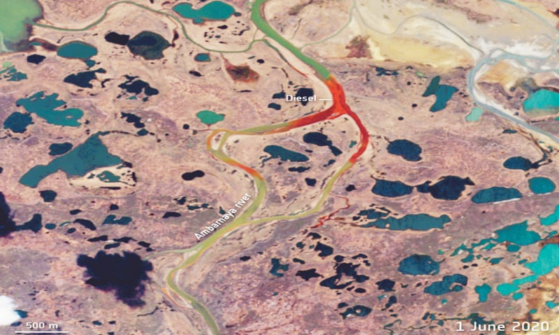

Daily News World
Todays News
Russia sees melting permafrost behind Arctic fuel spill

MOSCOW: An unprecedented fuel spill that has polluted huge stretches of Arctic rivers was caused by melting permafrost, Russian officials said on Friday, ordering a review of similar structures in vulnerable zones.
The spill — which has coloured remote tundra waterways with bright red patches visible from space — has highlighted Russia’s vulnerability to climate change as areas locked by permafrost for centuries thaw amid warmer temperatures.News of the cause of the accident came amid a huge cleanup effort outside the Arctic city of Norilsk which President Vladimir Putin said should be bankrolled by metals giant Norilsk Nickel.A national-level state of emergency was announced after 21,000 tonnes of diesel fuel spilled from a reservoir that collapsed last Friday which Norilsk Nickel owns through a subsidiary.